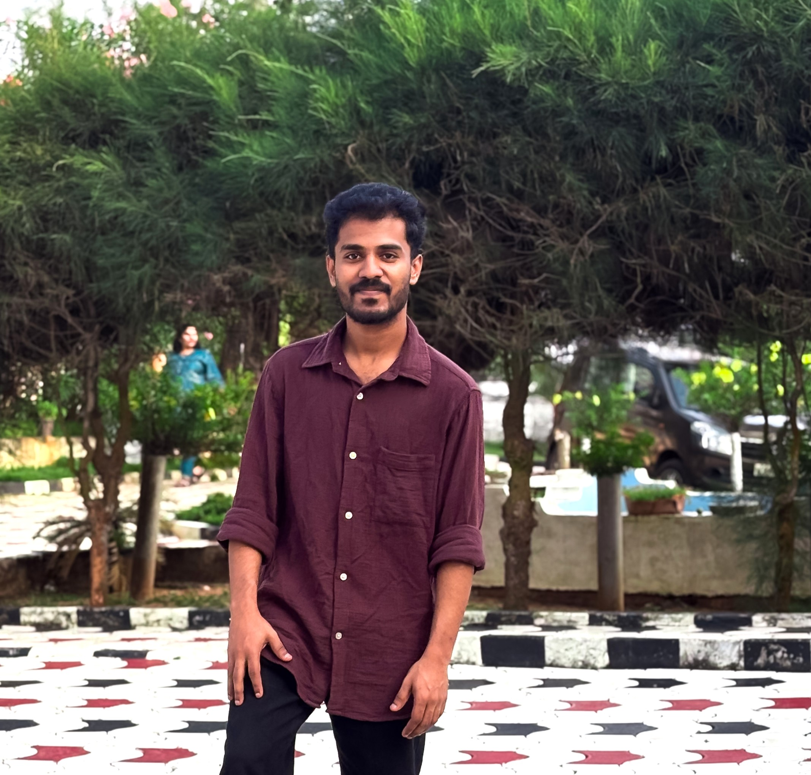

Passionate Data Analyst with a mission to unlock insights
I'm Allansha M A, an enthusiastic and self-motivated data scientist and analyst with a strong foundation in web development and data analysis. I hold a BE in Electronics and Communications Engineering from Ponjesly College of Engineering. With hands-on experience as a Junior Data Scientist Intern at Orauz Infotech, I have developed proficiency in Python, SQL, and Data Science technologies.
I am passionate about transforming raw data into actionable insights. My approach combines technical expertise with strong communication skills to deliver solutions that drive real-world impact. I believe in continuous learning and staying updated with the latest data science methodologies and tools.

BE: Electronics And Communications Engineering
Ponjesly College of Engineering, Nagercoil - 2023 | CGPA: 7.1
Certified Python Training
Besant Technologies - September 2023
ECPPP (Python Developer)
ETI - April 2024
Junior Data Scientist Intern
Orauz Infotech Pvt Ltd, Trivandrum - Jun 2023 to Dec 2023
Orauz Infotech Pvt Ltd, Trivandrum - Collaborated with data science team, developed ML models, wrote efficient Python code, created data visualizations and reports.
Successfully completed ETI's Python Developer certification, enhancing professional credentials in Python programming.
Completed comprehensive Python training from Besant Technologies, building strong foundation in Python programming.
Graduated with BE in Electronics and Communications Engineering from Ponjesly College of Engineering with CGPA 7.1.